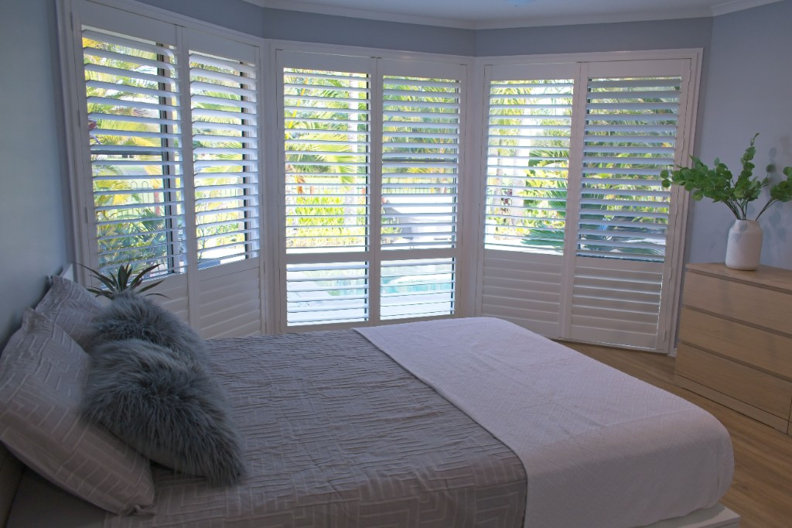
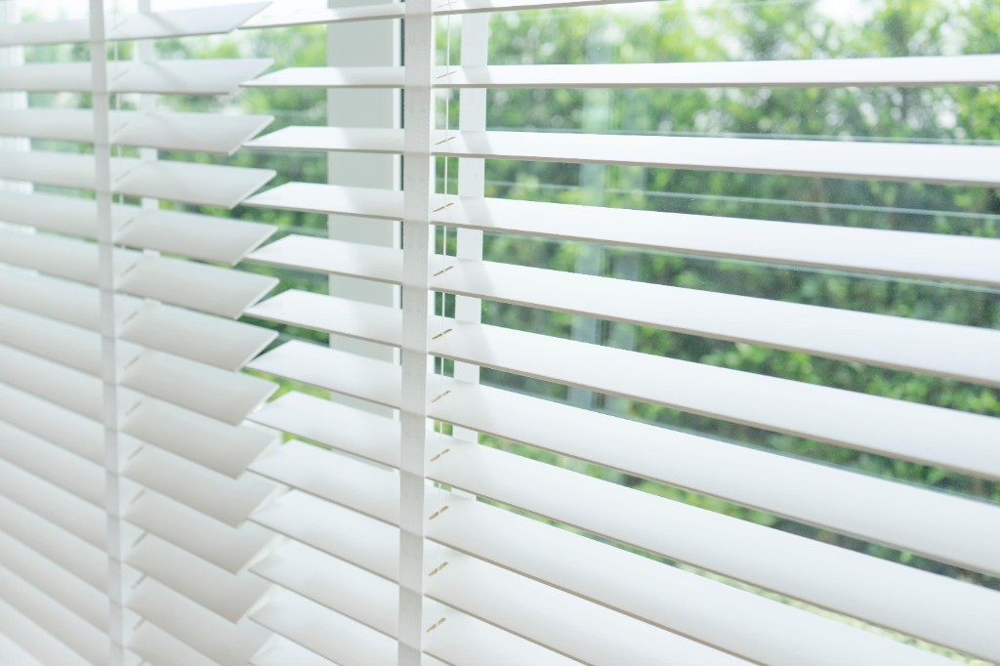
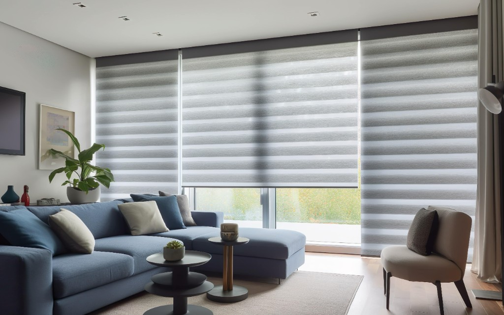

Shutters
Timeless plantation shutters in wood, vinyl, and composite — privacy, insulation, and lasting curb appeal.
Learn moreGarland, TX • Serving the DFW Metroplex
A craft-driven factory outfitted with the machinery to fabricate shutters, blinds, and shades to your exact designs and measurements. We cut, shape, assemble, and finish every piece in-house — with motorization and customization to match your style and architecture.
Free Consultation
Tell us about your windows and we'll put together a no-obligation estimate for custom shutters, blinds, shades, or motorization.
What we offer
Four ways to dress your windows beautifully — all custom-made and installed by WoodsMan.
Timeless plantation shutters in wood, vinyl, and composite — privacy, insulation, and lasting curb appeal.
Learn moreHorizontal and vertical slats in wood, metal, fabric, or faux — perfect light and privacy control.
Learn moreRoller, Roman, cellular, and zebra shades that filter light softly and add warmth to any room.
Learn moreApp, remote, and voice control for your shades and blinds — with scheduling and smart-home automation.
Learn morePricing
Browse our core product lines below. Every order is custom-measured and installed by our own team — request a free consultation for a personalized quote.

Shutters are a window covering used for both practical and aesthetic purposes. They consist of a frame with horizontal slats or vertical stiles that can be adjusted to control light, privacy, and airflow. Made from wood, vinyl, composite, or aluminum.

Blinds consist of individual slats that can be tilted or raised and lowered to regulate light and visibility. They offer adjustable, precise control and come in a wide range of styles and materials.

Roller shades consist of a single piece of fabric that rolls up or down to control light, privacy, and heat. Sleek, minimalist, and available in light-filtering, room-darkening, or blackout options.
Our Work
Custom installations we've crafted for homes across the Metroplex. Filter by category below.
Customer Reviews
★★★★★"The team measured, built, and installed our plantation shutters in no time. The craftsmanship is incredible — they look custom because they are."
★★★★★"We motorized the shades for the whole living room. Smooth, quiet, and so convenient. Highly recommend WoodsMan!"
★★★★★"Honest pricing and real quality. The blinds have held up beautifully and completely changed the feel of our home."
Visit Us
Stop by to see samples in person, or reach out and we'll bring the showroom to you with a free in-home consultation.
FAQ
Yes. Every project starts with a free, no-obligation consultation — we discuss your goals, take precise measurements, and give you an honest quote.
We're based in Garland, TX and serve Dallas, Plano, Richardson, Mesquite, Rowlett, and the greater DFW Metroplex.
Yes. We fabricate in our own Garland factory and handle professional installation, so your treatments fit perfectly.
Because we build locally, our lead times are among the fastest in DFW. We'll give you a clear timeline at your consultation.
A shutter window (also called a plantation shutter or interior shutter) is a window treatment with adjustable slats or louvers mounted in a solid frame. You tilt the slats to control light and airflow.
Light control — tilt the slats to regulate natural light. Privacy — adjust slats for privacy while still letting light in. Energy efficiency — shutters insulate the room and reduce energy costs. Aesthetics — a classic, elegant look that complements any interior style.
Shutters are solid framed panels with adjustable louvers (wood, PVC, or composite). Blinds use individual slats connected by cords or strings. Shades are fabric panels that roll, fold, or pleat. We'll help you choose the right fit for each room.
Absolutely. Most of our shades and blinds can be motorized for app, remote, and voice control, with scheduling and smart-home integration.
Yes — shutters are versatile and can be customized for standard rectangular windows as well as arched, bay, and specialty-shaped windows.
Traditional shutters may use cords or tilt rods. We also offer modern cordless designs and hidden tilt mechanisms for enhanced child safety.
Yes. Shutters are considered a premium window treatment. Many homebuyers appreciate their classic look and energy-saving benefits, which can increase your property's resale value.
Choose inside mount (shutter fits within the frame for a clean look) or outside mount (shutter covers the frame). Measure width at top, middle, and bottom — use the smallest for inside mount. Measure height at left, center, and right — use the longest for inside mount. Note any obstructions (handles, locks) and double-check all measurements before ordering.
Not sure? We offer free professional measuring as part of every consultation.
Regular dusting and occasional wiping with a damp cloth is all you need. Avoid harsh chemicals or excessive water. Proper care will extend the lifespan of your shutters for years.
While some DIY-savvy homeowners tackle it, we recommend professional installation to ensure precise fit and smooth operation — and it's included with every WoodsMan order.
Policies
WoodsMan Shutters and Blinds will repair or replace any part found defective in materials or workmanship at no cost. This warranty is limited to the original purchaser with no time limit. It does not cover alterations, misuse, excessive moisture, or normal wear and tear (e.g., natural color changes over time).
If installation has been requested and paid for, we install all products in accordance with accepted industry standards and factory warranty requirements.
All products are custom-made to your specifications and are not suitable for resale. All sales are final — no returns or exchanges. If changes or cancellations are made after production begins, additional charges may apply.
All COD charges must be paid to the installer at the time of installation. Products will not be left at your location until payment is collected in full.
Please inspect all merchandise upon delivery and report any damage at that time.
All colors are subject to dye-lot variations.
About WoodsMan
WoodsMan Shutters and Blinds is a Garland, TX factory that designs, builds, and installs custom window treatments. Because everything is fabricated in-house, we control quality from the first cut to the final finish — and pass the savings and speed on to you.
From handcrafted plantation shutters to smart motorization, we help homeowners, builders, and designers across the DFW Metroplex find the perfect fit for every window — with honest pricing and craftsmanship that lasts.